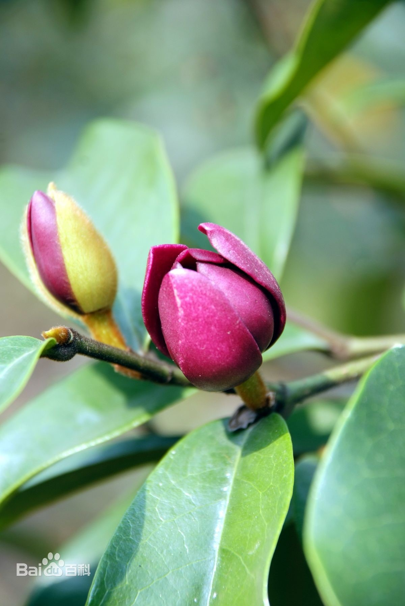

荫生植物园
荫生植物园建于2005年，面积7.5亩。由五个藤架、一条长140 米的溪沟、两个天然水井和一块沼泽地组成，园内道路系统完整。收集和展示荫生植物680种，包括柔毛大叶桂樱、马蹄参、薄叶润楠、八角、棱角山矾、墨紫含笑、杜茎山、七叶一枝花、小八角莲、八角莲、十大功劳属、淫羊藿属、旋蒴苣苔、血水草、多种蕨类、石菖蒲、阳荷、山姜、地瓜榕、多种苔类、喙果鸡血藤、龙须藤、湖北羊蹄甲、五指那藤、显齿蛇葡萄、美味猕猴桃等荫生植物。

柔毛大叶桂樱
常绿乔木，其冠形大，树姿优美，高达20米，叶革质，宽卵形至椭圆形，长10至19 厘米，叶缘具粗锯齿，叶柄及叶下面密被柔毛。总状花序，花序轴、花梗、萼筒及萼片密被白色长柔毛，果实黑褐色。叶翠绿，花多白色，花期9至10月。
马蹄参
五加科，马蹄参属乔木，高可达13米；枝暗棕色，叶片革质，倒卵状披针形或倒卵状长圆形，上面亮绿色，下面灰绿色，穗状圆锥花序单生，花序上部的花单生，无花梗，伞形花序有花；萼下面有关节，花瓣肉质，花丝比花瓣短；花柱圆锥状。果实长圆状卵形或卵形，稍侧扁，外果皮厚，胚弯曲，横切面成马蹄形。
薄叶润楠
樟科润楠属植物，高大乔木，高达28米；树皮灰褐色。枝粗壮，暗褐色，无毛。叶互生或在当年生枝上轮生，倒卵状长圆形，先端短渐尖，基部楔形，坚纸质，幼时下面全面被贴伏银色绢毛。圆锥花序6-10个，聚生嫩枝的基部，长8-12（15）厘米，柔弱，多花，上部略增大，先端三角形，顶锐尖。果球形，直径约1厘米；果梗长5-10毫米。
八角
乔木，树冠塔形，椭圆形或圆锥形；树皮深灰色；枝密集。叶不整齐互生，倒卵状椭圆形，倒披针形或椭圆形；正糙果3-5月开花，9-10月果熟，春糙果8-10月开花，翌年3-4月果熟；花粉红至深红色，单生叶腋或近顶生；果梗长20-56毫米，聚合果饱满平直，蓇葖多为8，呈八角形。
棱角山矾
山矾科山矾属乔木。小枝粗壮黄绿色，叶革质，狭椭圆形，穗状花序，基部有分枝，花冠白色，花丝基部联生成五体雄蕊；花盘有毛和腺点，花柱柱头盘状。核果长圆形，核骨质，花期3～4月，果期8～10月。
